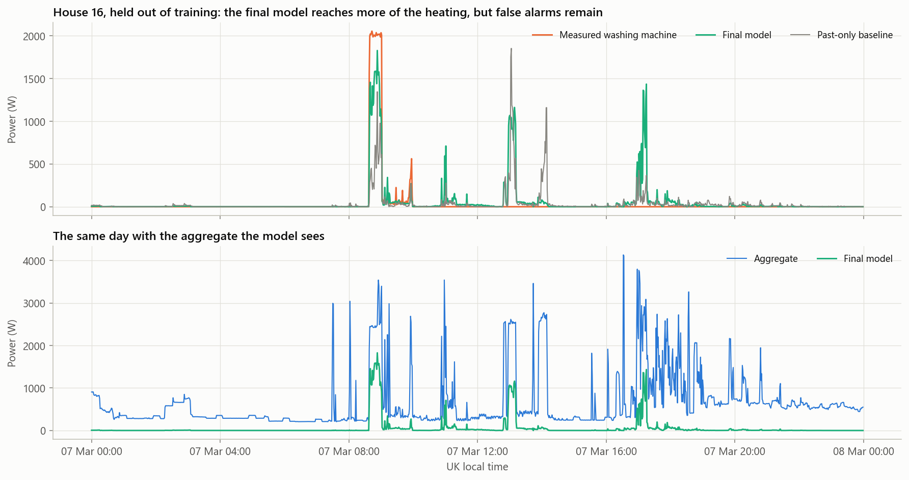
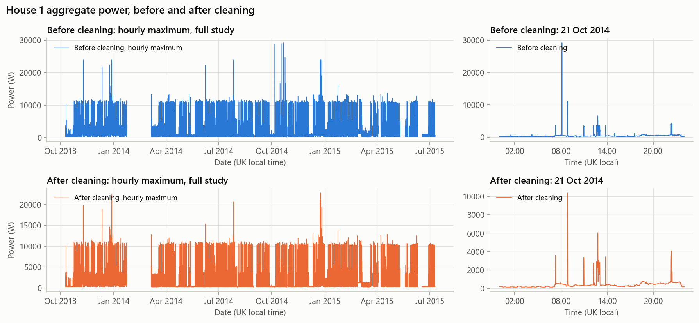

Utilities see a home's total power, but rarely what each appliance uses. This project cleans REFIT smart-meter data and estimates washing-machine power at 1-minute resolution, without any extra meter.
Reading what happens around each minute, not just before it, cut RMSE by 24% against the past-only baseline. It runs in batch, so it suits weekly reporting.
Watts, mean of 11 held-out homes. Lower is better.
Every home moved left, though the size of the gain varies. House 5 stays the hardest, and its weekly tracking did not improve.
Watts. Lower is better. Hover a row for values.
House 16 was held out of training. The final model follows the real 2 kW heating block more closely than the baseline. Similar loads can still trigger it.

Predicted energy in OFF minutes nearly halves, and heating rises from a third to nearly three-fifths of its measured energy.
kWh, all 11 homes together.
We tested alternatives under one fixed rule, and kept the rejected ones visible. A cycle-context feature set made the largest gain, while changing the loss did not beat it.
Watts, 1-minute input, mean of 11 held-out homes. Hover for the decision.
Beyond the brief: within-minute statistics from the ~8-second aggregate reached . They fall outside the 1-minute scope, so they are evidence for finer metering, not the final model.
Washer-dryer homes were not used to choose the final model. RMSE and R² stayed close to the main result, though a second washing load raised false alarms. This is a stress test, not an independent test.
The raw clock shifts at UK clock changes, about 1 million timestamps repeat, and sensors report spikes up to 98 kW. Frozen readings made up 30.7% of House 5's published washer energy.

Model development used these 11 UK homes, with each home held out in testing, so scores may be somewhat optimistic. Dishwashers and low-heat cycles remain the hardest cases. Validating on new homes is the next step.